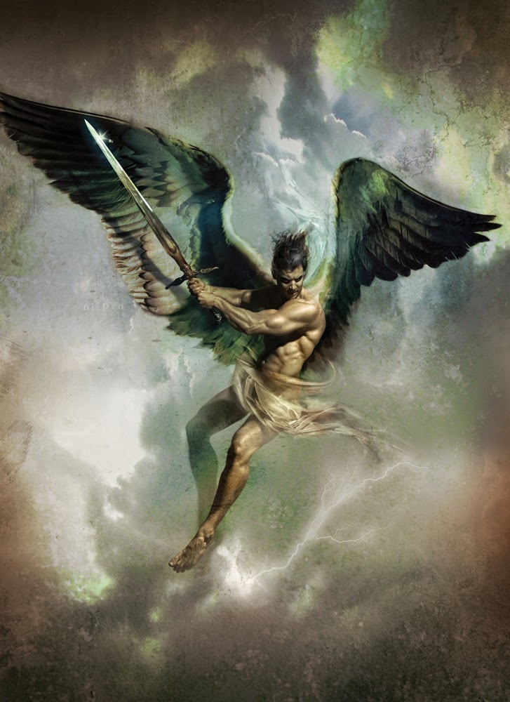

Thanatos was the Greek god of nonviolent deaths. His name literally translates to “death” in Greek. In some myths, he’s considered to be a personified spirit of death rather than a god. The touch of Thanatos was gentle, often compared to the touch of Hypnos, who was the god of sleep. Thanatos and Hypnos are twins; this is where the saying, “Death, and his brother, sleep,” comes from.
Thanatos has a dominant role in two Greek myths. There’s a myth wherein he was sent to bring Alkestis back to the underworld. However, Heracles drove him off through combat. In another myth, Sisyphus was a criminal who trapped Thanatos in a sack so that he wouldn’t die.
When Thanatos was depicted on vases, he was shown to be a bearded and winged old man. In some rare cases, he was depicted as a young person without any beard. In the Iliad, there’s a scene where he often appears with Hypnos to carry away Sarpedon’s body.
